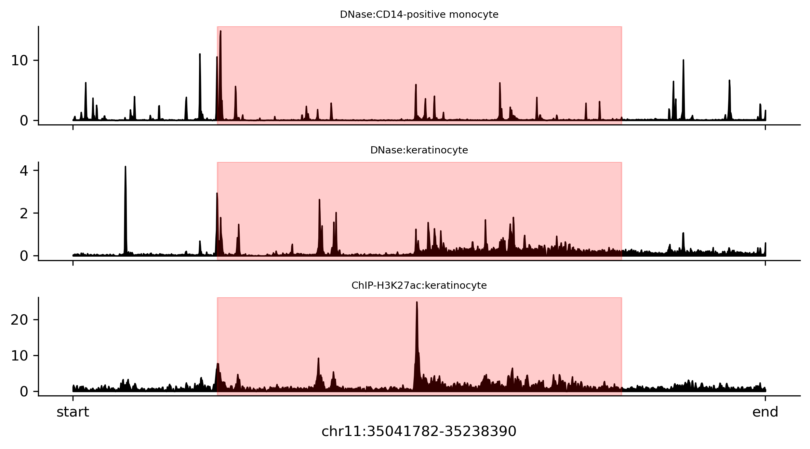

gdata.GenomeDataLoader#
- class gdata.GenomeDataLoader(self, /, location, *, batch_size=8, trim_target=None, tag=None, seq_as_string=False, prefetch=1)#
A dataloader for genomic data, allowing for efficient retrieval of genomic sequences and their associated values.
This object provides an iterator over genomic data chunks, enabling batch retrieval of genomic sequences and their associated values. The iterator yields tuples of (sequences, values) or (tag, sequences, values), depending on whether a tag is provided. Sequences has shape (batch_size, sequence_length), and values has shape (batch_size, sequence_length / resolution, num_tracks).
- Parameters:
location (Path) – The path to the genomic data directory.
batch_size (int) – The number of genomic sequences to retrieve in each batch (default is 8).
trim_target (Optional[int]) – Trim both ends of the target vector according to the
trim_targetparameter. As a result, the length of the values will be reduced by2 * trim_target. The unit oftrim_targetis base pairs, and it must be a multiple of the resolution. Note this only affects the values, not the sequences. The sequences will always have the full length as defined in the dataset. This is useful when you want to compute the loss on only the central part of the sequence. This is because the edges of the sequence may contain padding or other artifacts that should not be considered in the loss computation.tag (Optional[str]) – An optional tag to identify the dataset. If provided, the data loader will include this tag in each data batch, which can be useful for distinguishing between different datasets or experiments.
seq_as_string (bool) – If True, sequences will be returned as strings instead of numpy integer arrays. This is useful for cases where you want to work with the sequences as text, such as for visualization or text-based analysis.
prefetch (int) – The number of chunks to prefetch for efficient data loading (default is 1). This allows for asynchronous loading of data, improving performance during training or inference. But it will increase memory usage, so it should be set according to the available resources.
See also
Examples
>>> from gdata import as GenomeDataLoader >>> loader = GenomeDataLoader("test_genome", trim_target=40_960) >>> region = 'chr11:35041782-35238390' >>> tracks = ['DNase:CD14-positive monocyte', 'DNase:keratinocyte', 'ChIP-H3K27ac:keratinocyte'] >>> loader.plot(region, tracks, savefig="signal.png")

Attributes
Methods